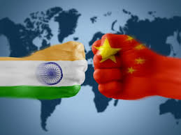

KEY HIGH LIGHTS

→China has superior military might compared to India
→Chinese defence budget is nearly four times that of India
→In terms of personnel and equipment, China scores higher than India
→China has seven air bases close to the Indian border in Tibet and Xinjiang sector
→China lacks blast protected concrete shelters for its combat aircraft
↪Amongst the biggest advantages that a superpower like the United States enjoys is that by virtue of its geography, it does not share a border with a hostile country. India has the very disadvantage in converse - the Line of Control (LoC) on the western border and superior military on the eastern side, both borders hem away nations with whom we have fought wars in the past.
↪Pakistan, due to our angst-filled history and a bloody Partition, has been at its belligerent worst from the very start. In 1947, just when the lines were being drawn, Kashmir became the centre of dispute as Pakistan sent in Army regulars in the guise of invading tribesmen. The Nehruvian blunder of stalling Indian forces before they recaptured the entire territory (though Britain also played mischief in prompting him), cost India the area that is now known as Pakistan-occupied-Kashmir (PoK), a natural defence border and a lingering wound that has given neither of the two countries or the people of Kashmir a sense of closure.
↪In the eastern part of Kashmir, or rather Ladakh, lies the area called Aksai Chin. It was only in 1957 that India discovered that China had built a road linking Xinjiang with western Tibet and claimed the territory as its own. The border dispute eventually led to a Sino-Indian conflict in 1962.
↪This month, when India finally abrogated Article 370 in Kashmir (or at least repealed Article 35A), Union Home Minister Amit Shah talked of the unfinished agenda in reclaiming PoK and Aksai Chin. This obviously rattled not just Pakistan, which has been extremely irked at the recent happenings, but also China. China eventually called for a closed-door meeting at the United Nations on the issue.